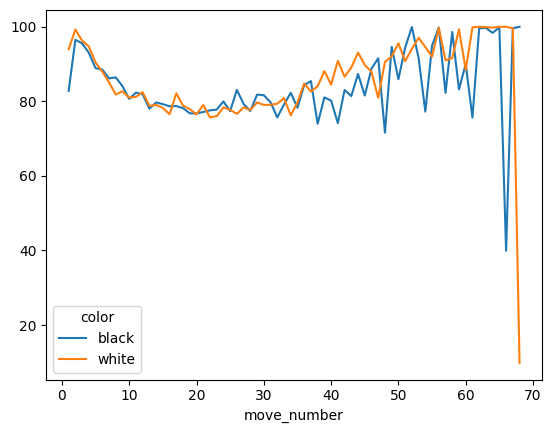
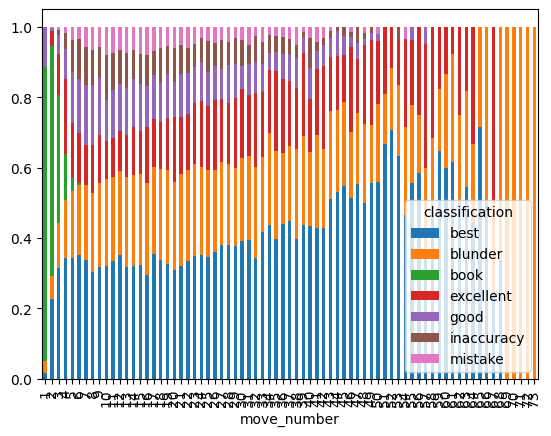

%load_ext autoreload
%autoreload 2
%matplotlib inlineMove tables
import os, sys
import pickle
import pandas as pd
import numpy as np
sys.path.append('../src')
import utilsIn this notebook we want to do the second step that is necessary to start transforming the data gathered into something that can be used for analysis, which is creating move tables.
Move tables will include all the moves performed in the analysed game, and will allow for further analysis of the data. In particular, we’re interested in loading the data from the data/analysis folder.
We must first take the game data.
Load data
# basic parameters
username = 'rugitodoleao_returns'
years = [2023]
months = [1, 2]Load raw data
# load player data
player_data_raw = utils.load_player_data(
username,
years,
months,
outdir = "../data/player_data",
force = False
)Postprocess game metadata
# create a dataframe containing all the info we need
# for the analysis
player_data = utils.postprocess_data(player_data_raw, username)player_data.iloc[0]rating_white 1011
result_white win
@id_white https://api.chess.com/pub/player/gaspard_the_best
username_white Gaspard_the_Best
uuid_white 5e744ff6-cdf2-11e3-8060-000000000000
rating_black 934
result_black resigned
@id_black https://api.chess.com/pub/player/rugitodoleao_...
username_black rugitodoleao_returns
uuid_black dc1822f6-17e1-11ed-8ff2-2b370c364d20
url https://www.chess.com/game/live/66301833501
pgn [Event "Live Chess"]\n[Site "Chess.com"]\n[Dat...
time_control 180
end_time 1672563064
rated True
accuracies {'white': 80.31, 'black': 69.88}
tcn mCYQdvZJCJQJkA!TAJ7JvJTJgv6Lbq0SqH5QfAWOAJOHJQ...
uuid bad69d7e-89b0-11ed-b5e4-78ac4409ff3c
initial_setup rnbqkbnr/pppppppp/8/8/8/8/PPPPPPPP/RNBQKBNR w ...
fen 8/8/7k/6R1/6Kp/7P/8/8 b - -
time_class blitz
rules chess
start_time NaN
color black
won_lost_or_draw lost
reason resigned
rating 934
Name: 66301833501, dtype: objectLoad analysis data
%%time
# general analysis parameters
depth = 20
multipv = 3
outdir = "../data/analysis"
analysis_outdir = utils.analysis_outdir_name(depth, multipv, outdir)
# init data structure
analysis_data = pd.Series(index=player_data.index, dtype=object)
for fname in os.listdir(analysis_outdir):
# name of the file we read
full_fname = f"{analysis_outdir}/{fname}"
# game identifier
gameid = fname.replace(".pkl", "")
# read file
with open(full_fname, 'rb') as f:
analysis_data[gameid] = pickle.load(f)[1]CPU times: user 5.58 s, sys: 160 ms, total: 5.74 s
Wall time: 5.74 sMake move tables
%%time
# init the table as a list
move_table = []
# iterate on the games
for gameid, pgn in player_data.pgn.items():
tmp = utils.create_move_table(pgn, analysis_data)
move_table.append(tmp)
# and then create a master dataframe
move_table = pd.concat(move_table)CPU times: user 9.28 s, sys: 5.18 ms, total: 9.28 s
Wall time: 9.28 s# load openings
openings = utils.load_openings('../data/chess-openings/dist')
openings.head()| eco | name | pgn | uci | epd | |
|---|---|---|---|---|---|
| 0 | A00 | Amar Gambit | 1. Nh3 d5 2. g3 e5 3. f4 Bxh3 4. Bxh3 exf4 | g1h3 d7d5 g2g3 e7e5 f2f4 c8h3 f1h3 e5f4 | rn1qkbnr/ppp2ppp/8/3p4/5p2/6PB/PPPPP2P/RNBQK2R... |
| 1 | A00 | Amar Opening | 1. Nh3 | g1h3 | rnbqkbnr/pppppppp/8/8/8/7N/PPPPPPPP/RNBQKB1R b... |
| 2 | A00 | Amar Opening: Gent Gambit | 1. Nh3 d5 2. g3 e5 3. f4 Bxh3 4. Bxh3 exf4 5. ... | g1h3 d7d5 g2g3 e7e5 f2f4 c8h3 f1h3 e5f4 e1g1 f... | rn1qkbnr/ppp2ppp/8/3p4/8/6PB/PPPPP3/RNBQ1RK1 b... |
| 3 | A00 | Amar Opening: Paris Gambit | 1. Nh3 d5 2. g3 e5 3. f4 | g1h3 d7d5 g2g3 e7e5 f2f4 | rnbqkbnr/ppp2ppp/8/3pp3/5P2/6PN/PPPPP2P/RNBQKB... |
| 4 | A00 | Amsterdam Attack | 1. e3 e5 2. c4 d6 3. Nc3 Nc6 4. b3 Nf6 | e2e3 e7e5 c2c4 d7d6 b1c3 b8c6 b2b3 g8f6 | r1bqkb1r/ppp2ppp/2np1n2/4p3/2P5/1PN1P3/P2P1PPP... |
%%time
analysis_df = move_table.groupby('gameid').apply(utils.classify_moves, openings=openings)# .apply(pd.Series)
# results
move_table_expanded = move_table.merge(analysis_df, on='move_id',how='left')CPU times: user 1min 43s, sys: 1min 5s, total: 2min 49s
Wall time: 2min 49splayer_moves = move_table_expanded.merge(\
player_data['color'].reset_index(), on=['gameid', 'color'])game_data = move_table_expanded.iloc[:40]game_data.merge(openings, on='epd').tail(1).iloc[0]move_id 66301833501-1
gameid 66301833501
ply 1
move_number 1
color black
piece P
uci_x c7c6
san c6
epd rnbqkbnr/pp1ppppp/2p5/8/4P3/8/PPPP1PPP/RNBQKBN...
fen rnbqkbnr/pp1ppppp/2p5/8/4P3/8/PPPP1PPP/RNBQKBN...
analysis_data [{'string': 'NNUE evaluation using nn-ad9b4235...
classification good
cp 29
accuracy 83.353678
cp_loss -44.0
eco B10
name Caro-Kann Defense
pgn 1. e4 c6
uci_y e2e4 c7c6
Name: 1, dtype: objectplayer_moves.groupby(['color', 'move_number']).accuracy.mean().dropna().unstack().transpose().plot()
classification_move_number = player_moves.\
groupby(['classification', 'move_number']).move_id.nunique().\
unstack().transpose()
nmoves_move_number = classification_move_number.sum(axis=1)
classification_move_number.divide(nmoves_move_number, axis=0).plot(kind='bar',stacked=True)
player_moves.merge(player_data['opening'], left_index=True,
right_index=True)# .query('classification != "book"').groupby('opening').accuracy--------------------------------------------------------------------------- KeyError Traceback (most recent call last) File ~/soft/python_venvs/p3.9/lib/python3.9/site-packages/pandas/core/indexes/base.py:3621, in Index.get_loc(self, key, method, tolerance) 3620 try: -> 3621 return self._engine.get_loc(casted_key) 3622 except KeyError as err: File ~/soft/python_venvs/p3.9/lib/python3.9/site-packages/pandas/_libs/index.pyx:136, in pandas._libs.index.IndexEngine.get_loc() File ~/soft/python_venvs/p3.9/lib/python3.9/site-packages/pandas/_libs/index.pyx:163, in pandas._libs.index.IndexEngine.get_loc() File pandas/_libs/hashtable_class_helper.pxi:5198, in pandas._libs.hashtable.PyObjectHashTable.get_item() File pandas/_libs/hashtable_class_helper.pxi:5206, in pandas._libs.hashtable.PyObjectHashTable.get_item() KeyError: 'opening' The above exception was the direct cause of the following exception: KeyError Traceback (most recent call last) Input In [48], in <cell line: 1>() ----> 1 player_moves.merge(player_data['opening'], left_index=True, 2 right_index=True) File ~/soft/python_venvs/p3.9/lib/python3.9/site-packages/pandas/core/frame.py:3505, in DataFrame.__getitem__(self, key) 3503 if self.columns.nlevels > 1: 3504 return self._getitem_multilevel(key) -> 3505 indexer = self.columns.get_loc(key) 3506 if is_integer(indexer): 3507 indexer = [indexer] File ~/soft/python_venvs/p3.9/lib/python3.9/site-packages/pandas/core/indexes/base.py:3623, in Index.get_loc(self, key, method, tolerance) 3621 return self._engine.get_loc(casted_key) 3622 except KeyError as err: -> 3623 raise KeyError(key) from err 3624 except TypeError: 3625 # If we have a listlike key, _check_indexing_error will raise 3626 # InvalidIndexError. Otherwise we fall through and re-raise 3627 # the TypeError. 3628 self._check_indexing_error(key) KeyError: 'opening'